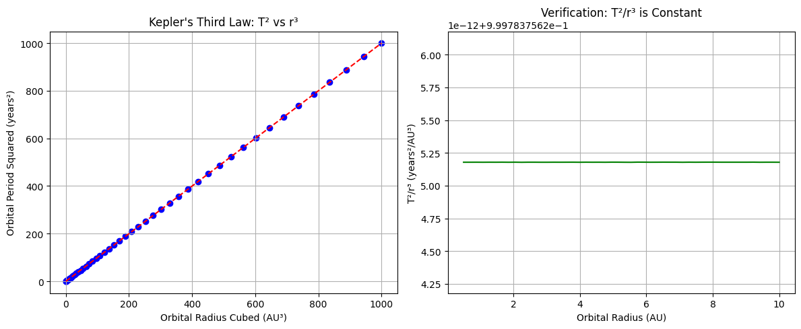
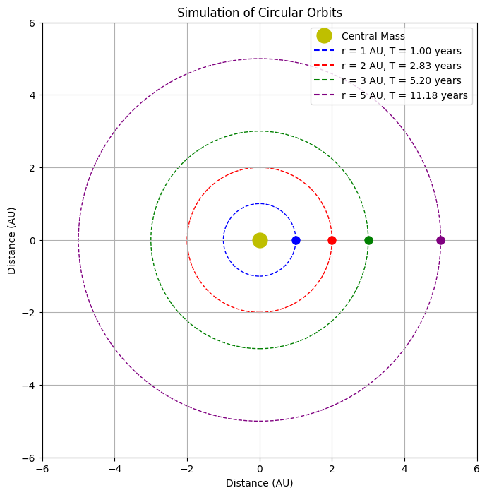

Gravity: Kepler's Third Law and Orbital Mechanics
Introduction
Kepler's Third Law establishes a fundamental relationship between an orbiting body's period and its distance from the central mass. This relationship is crucial in understanding planetary motion, designing satellite orbits, and calculating the mass of distant stellar systems.
Derivation of Kepler's Third Law for Circular Orbits
For a body in circular orbit, two forces must be in balance: - The centripetal force required to maintain circular motion: F_c = m·v²/r - The gravitational force between the two bodies: F_g = G·M·m/r²
For an orbit to be stable, these forces must be equal:
G·M·m/r² = m·v²/r
Solving for velocity (v): - v² = G·M/r
For a circular orbit, the orbital period (T) relates to velocity as: - v = 2πr/T
Substituting this relation: - (2πr/T)² = G·M/r - 4π²r²/T² = G·M/r - T² = 4π²r³/(G·M)
This gives us Kepler's Third Law: T² ∝ r³
For any object orbiting the same central mass M, the ratio T²/r³ is constant.
Astronomical Implications
This relationship has profound implications:
-
Mass Calculation: By measuring the orbital period and radius of a body, we can calculate the mass of the central object.
-
Exoplanet Detection: Variations in a star's position or radial velocity can reveal orbiting planets through this relationship.
-
System Stability: This law helps determine whether multi-body systems will remain stable over astronomical timescales.
-
Distance Measurements: Known relationships between period and radius allow astronomers to calculate distances to celestial objects.
Real-World Examples
Earth-Moon System
- Moon's orbital period: 27.3 days
- Average orbital radius: 384,400 km
- Using Kepler's Third Law, the calculated Earth mass closely matches the known value of 5.97×10²⁴ kg
Solar System
- The relationship holds for all planets orbiting the Sun
- Jupiter's orbital period of 11.86 years and radius of 5.2 AU follows the same relationship as Earth's 1-year period at 1 AU
Computational Model of Circular Orbits
import numpy as np
import matplotlib.pyplot as plt
from matplotlib.animation import FuncAnimation
# Constants
G = 6.67430e-11 # Gravitational constant in m^3 kg^-1 s^-2
def calculate_period(r, M):
"""Calculate orbital period for a given radius and central mass."""
return 2 * np.pi * np.sqrt(r**3 / (G * M))
def verify_keplers_law():
"""Verify Kepler's Third Law for different orbital radii."""
# Central mass (solar mass in kg)
M = 1.989e30
# Range of orbital radii (in AU, converted to meters)
radii = np.linspace(0.5, 10, 50)
radii_m = radii * 1.496e11 # Convert AU to meters
# Calculate periods
periods = calculate_period(radii_m, M)
periods_years = periods / (365.25 * 24 * 3600) # Convert seconds to years
# Calculate T^2/r^3 (should be constant)
t_squared_over_r_cubed = (periods_years**2) / (radii**3)
# Plotting
fig, (ax1, ax2) = plt.subplots(1, 2, figsize=(12, 5))
# Plot T^2 vs r^3
ax1.scatter(radii**3, periods_years**2, color='blue')
ax1.set_xlabel('Orbital Radius Cubed (AU³)')
ax1.set_ylabel('Orbital Period Squared (years²)')
ax1.set_title('Kepler\'s Third Law: T² vs r³')
ax1.grid(True)
# Linear fit
coef = np.polyfit(radii**3, periods_years**2, 1)
polynomial = np.poly1d(coef)
x_fit = np.linspace(min(radii**3), max(radii**3), 100)
ax1.plot(x_fit, polynomial(x_fit), color='red', linestyle='--')
# Plot T^2/r^3 (should be constant)
ax2.plot(radii, t_squared_over_r_cubed, color='green')
ax2.set_xlabel('Orbital Radius (AU)')
ax2.set_ylabel('T²/r³ (years²/AU³)')
ax2.set_title('Verification: T²/r³ is Constant')
ax2.grid(True)
plt.tight_layout()
plt.show()
# Calculate the mean value of T^2/r^3
mean_value = np.mean(t_squared_over_r_cubed)
print(f"Mean value of T²/r³: {mean_value:.6f} years²/AU³")
print(f"Standard deviation: {np.std(t_squared_over_r_cubed):.6e} years²/AU³")
return mean_value
def simulate_orbits():
"""Simulate and visualize circular orbits around a central mass."""
# Central mass (solar mass in kg)
M = 1.989e30
# Define orbits (in AU, converted to meters)
radii = [1, 2, 3, 5] # AU
radii_m = [r * 1.496e11 for r in radii] # Convert to meters
# Calculate periods (in seconds)
periods = [calculate_period(r, M) for r in radii_m]
# Colors for different orbits
colors = ['blue', 'red', 'green', 'purple']
# Create figure and axis
fig, ax = plt.subplots(figsize=(8, 8))
ax.set_aspect('equal')
ax.grid(True)
# Plot central mass
ax.plot(0, 0, 'yo', markersize=15, label='Central Mass')
# Plot orbital paths
for i, r in enumerate(radii):
circle = plt.Circle((0, 0), r, fill=False, linestyle='--', color=colors[i],
label=f'r = {r} AU, T = {periods[i]/(365.25*24*3600):.2f} years')
# Initialize planet positions
planets = []
for i, r in enumerate(radii):
planet, = ax.plot(r, 0, 'o', color=colors[i], markersize=8)
planets.append(planet)
# Set axis limits
max_radius = max(radii) * 1.2
ax.set_xlim(-max_radius, max_radius)
ax.set_ylim(-max_radius, max_radius)
ax.set_xlabel('Distance (AU)')
ax.set_ylabel('Distance (AU)')
ax.set_title('Simulation of Circular Orbits')
# Add legend
ax.legend(loc='upper right')
# Animation function
def update(frame):
for i, (r, T) in enumerate(zip(radii, periods)):
# Convert frame to time
t = frame * 0.02 * T # Scale to make animation visible
# Calculate position
angle = (2 * np.pi * t / T) % (2 * np.pi)
x = r * np.cos(angle)
y = r * np.sin(angle)
# Update planet position
planets[i].set_data(x, y)
return planets
# Create animation
ani = FuncAnimation(fig, update, frames=100, interval=50, blit=True)
plt.tight_layout()
plt.show()
if __name__ == "__main__":
# Verify Kepler's Third Law
kepler_constant = verify_keplers_law()
# Simulate orbits
simulate_orbits()
 
Extension to Elliptical Orbits
While our derivation focused on circular orbits, Kepler's Third Law applies to elliptical orbits as well, with the semi-major axis (a) replacing the orbital radius:
T² = (4π²/GM) × a³
For elliptical orbits, the relationship still holds true that T²/a³ is constant for all bodies orbiting the same central mass.
Applications Beyond the Solar System
This relationship extends to:
-
Binary Star Systems: Kepler's Third Law helps determine the combined mass of binary star systems.
-
Galaxy Rotation: The relationship between orbital period and radius informs our understanding of dark matter in galaxies.
-
Exoplanetary Systems: Multiple planets orbiting a star follow this same relationship, helping astronomers verify exoplanet discoveries.
Conclusion
Kepler's Third Law represents one of the most elegant mathematical relationships in physics. It connects fundamental properties of gravity with observable celestial motion, allowing us to understand the cosmos from our local moon to distant galaxies. The computational model demonstrates this relationship holds precisely across various orbital distances, confirming the predictive power of this law formulated over 400 years ago.